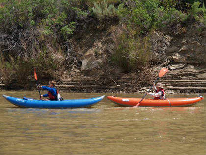
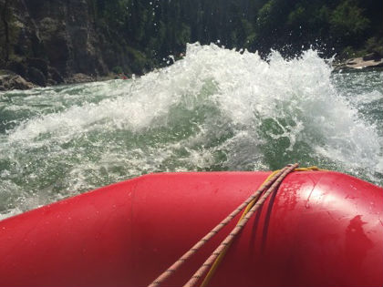

rivers
relax
 Main Fork of the Salmon, Idahonestled feep in the Frank Church Wilderness of No Return winds the Salmon River. the Salmon was given the nickname long ago as the River of No Return by the people living near it because of the number of folks that came to visit and fell so in love with the rugged beauty of the river that they never left.
herds of elk and deer graze on the hillsides around the river and bear and bighorn sheep are also lined with awe inspiring ponderosa pine which tower over the sandy beaches in the campsites and provide shelter from the sun or rain when needed.
the Salmon is one of the longest un-damned rivers in the United States. as a free fowing river, the water is higher, faster, and colder in the early summer and lower, slower, and warmer in the late summer. there are good rapids all summer. families with children who like to swim tend to appreciate the late summer's slower, warmer water more.
rush
 Grand Canyon, Arizonathis is the Grand Daddy of all canyons and the Grand Daddy of all river trips. you will never forget your visit to the Grand Canyon.
Grand Canyon river rafting combines world-class whitewater with breathtaking scenery to make one truly unforgettable river experience. the canyon is filled not only with exhilarating whitewater rapids, but with side canyons and ancient indian ruins accessible only by river.
all people can enjoy the amazing Grand Canyon rapids, whether big or small. However, these rapids require more experienced rafters.